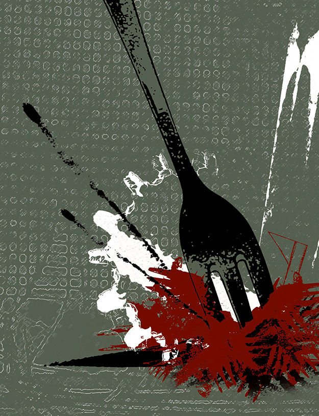

Fork Stab:

A Formal Exploration Through Process.
A fork, an implement with two or more prongs used for lifting food to the mouth or holding it when cutting. An object that when used, in all actuality, is quite violent in nature.